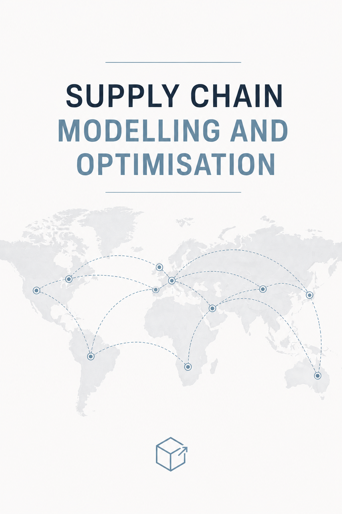

Supply Chain Modelling and Optimisation
Preface

Modern supply chains are complex systems that require effective planning, analysis, and decision-making to ensure the efficient flow of goods, information, and resources. This unit introduces the fundamental concepts and quantitative methods used to model and optimise supply chain operations.
The material covers logistics network design, demand forecasting, and inventory management, with an emphasis on mathematical modelling and optimisation techniques. Through practical examples and case studies, students will learn how analytical tools can be applied to real-world industrial problems.
These materials are intended to support learning in INDE2000/5000 Supply Chain Modelling and Optimisation and 05115130 Supply Chain Modelling and Optimisation (供应链建模与优化), providing both theoretical foundations and practical insights. By engaging with the material, students will develop the skills needed to analyse supply chain systems, evaluate alternative solutions, and make informed operational and strategic decisions.
Announcements & FAQs
Unit Materials (June 2026 Class)
Updates from last year:
- Migrate from PDF to HTML format for lecture slides and tutorial materials.
- Add more contents to the lecture slides, including more examples, detailed explanations, and Python code snippets.
- Add more tutorial questions and solutions.
Status:
- Green icon: Materials are ready and available.
- Orange icon: Materials are waiting to be uploaded.
- Red icon: Materials are not yet / will not be available.
| Date | Time | Topic | LT | TUT | SOLS |
|---|---|---|---|---|---|
| Thu 4 | 6:10 - 9:40 PM | 1. Intro to Supply Chain & Optimisation | |||
| Fri 5 | 6:10 - 9:40 PM | 2. Network Design - Single-Echelon Single-Commodity (SESC) | |||
| 5 PM | Assignment Released | ||||
| Sun 7 | 1:30 - 5:10 PM | 3. Network Design - Two-Echelon Multi-Commodity (TEMC) | |||
| Mon 8 | 6:10 - 9:40 PM | 4. Network Design under Uncertainty | |||
| Tue 9 | 6:10 - 9:40 PM | 5. Demand Forecasting Techniques | |||
| Wed 10 | 6:10 - 9:40 PM | 6. Inventory Model: Single-Commodity | |||
| Thu 11 | 8:00 - 11:40 AM | 7. Inventory Model: Discount and Multi-Commodity | |||
| Fri 12 | 6:10 - 9:40 PM | 8. Stochastic Inventory Model: Single and Multi-Period | |||
| Sun 14 | 6:10 - 9:40 PM | Revision Assignment Due at 9:40 PM |